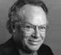

Paul A. David is Professor of Economics and Senior Fellow of the Institute for Economic Policy Research at Stanford University. He is Professor Emeritus of Economics and Economic History in the University of Oxford, Emeritus Fellow of All Souls College, Oxford and currently Senior Fellow of the Oxford Internet Institute. David is the author of more than 150 journal articles and contributions to edited volumes, as well as of the author and editor of several books including Technical Choice, Innovation and Economic Growth (1975) and The Economic Future in Historical Perspective (2003). He was among the pioneering practitioners of the "new economic history," and is known internationally for wide-ranging contributions in the fields of American economic history, economic and historical demography, and the economics of science and technology. Investigation of the conditions that give rise to 'path dependence' -- the persisting influence of historical events in micro- and macro-economic phenomena – is a recurring theme in his research. Two main areas of contemporary economic policy research have emerged in his work the past two decades: the evolution of information technology standards and network industries, and the influence of legal institutions and social norms upon the funding and conduct of scientific research in the public sector, and the interactions between that latter and private sector R&D. David currently leads an international research project on the organization, performance and viability of free and open source software. David's service as a consultant to international organizations has included work for the World Bank, the United Nations Commission on Trade and Development, the United Nations University Institute, the OECD, several directorates of the European Commission of the EU, the European Committee for Future Accelerators, the Economic and Social Research Council (U.K.), the Treasury and the Ministry of Science and Technology of New Zealand, and the German Monopolies Commission. He also has had extensive service-experience as a consultant to U. S. government agencies and foundations, including the National Academy of Science (National Research Council), the National Science Foundation, and the Departments of Commerce, and of Energy; the Rockefeller Foundation, the Sloan Foundation and other public and non-profit organizations. He is at present a non-executive member of the board of directors of La Compagnie de Saint-Gobain. Many professional honors have been bestowed upon David in the course of his career, including election as Fellow of the International Econometrics Society (1975), Pitt Professor of American History and Institutions in the University of Cambridge, as Fellow of the American Academy of Arts and Sciences (1979), Vice-President, and President of the Economic History Association (1988-89), as Marshall Lecturer in the University of Cambridge (1992), Ordinary Fellow of the British Academy (1995), Member of Council of the Royal Economics Society (1996-2002), Member of the American Philosophical Society (2003); and the award of a Doctorate Honoris Causa by the University of Torino (2003).

Except where otherwise noted, this site is
licensed under a Creative Commons License